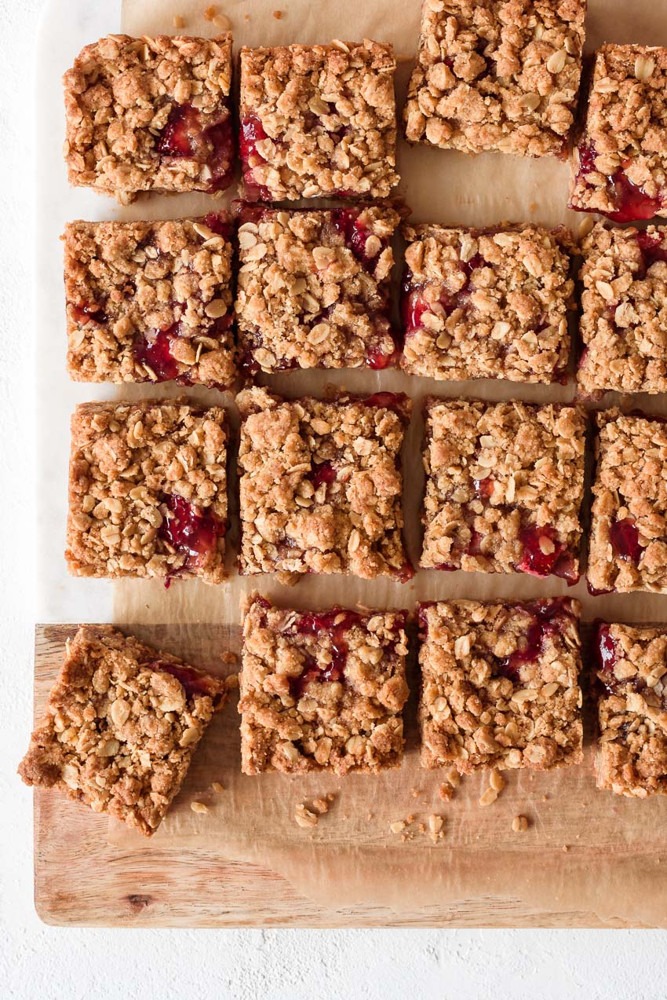

Strawberry Jam Crumble Bars

Description
Easy homemade strawberry jam crumble bars. They’re filled with everything to love about a classic strawberry fruit crisp – flavorful strawberries nestled between a buttery brown sugar and oat crust and crumb topping – but in convenient hand held form! Made with simple pantry ingredients, easily adaptable (egg free, vegan, gluten free options), and perfect for sharing.
Ingredients
- 2 cups (180g) rolled oats
- 2 cups (240g) all-purpose flour
- 3/4 cup (160g) light brown sugar (packed)
- 1/4 cup (50g) granulated sugar
- 1/2 tsp baking soda
- 1/2 tsp ground cinnamon
- 1/4 tsp ground ginger
- 1/2 tsp Kosher salt
- 1 cup (2 sticks) unsalted butter, softened
- 10 oz strawberry preserves
- 1/2 cup chopped strawberries
- zest of half a lemon (optional)
Steps
- Preheat the oven to 350℉. Line a 9×9-inch baking pan with parchment paper, leaving about an inch overhang on two sides. Set aside.
- Make the crumble: In a large mixing bowl, stir together the oats, flour, sugars, baking soda and spices until well-combined.
- Cut the butter into cubes, then use your fingers to gently knead the butter into the dry ingredients, until completely incorporated, and you’ve formed a shaggy, crumbly dough, that easily sticks together when pinched. This will take a few minutes.
- Assemble: Scoop about two thirds of the crumble dough into the baking pan, and press into an even layer along the bottom. Spoon the jam over the bottom crust, leaving about 1/4 border around the sides. Top with the chopped strawberries and lemon zest (if using).
- Sprinkle the remaining crumble mixture over top, from edge to edge. Very gently press the crumbles into the jam.
- Bake for 35-45 minutes, until the crumble topping is golden brown and has puffed up a bit. The jam may be starting to bubble up through the crumbs, slightly. Remove from the oven and let cool completely before cutting into bars.